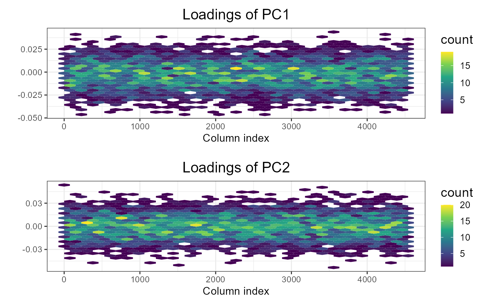
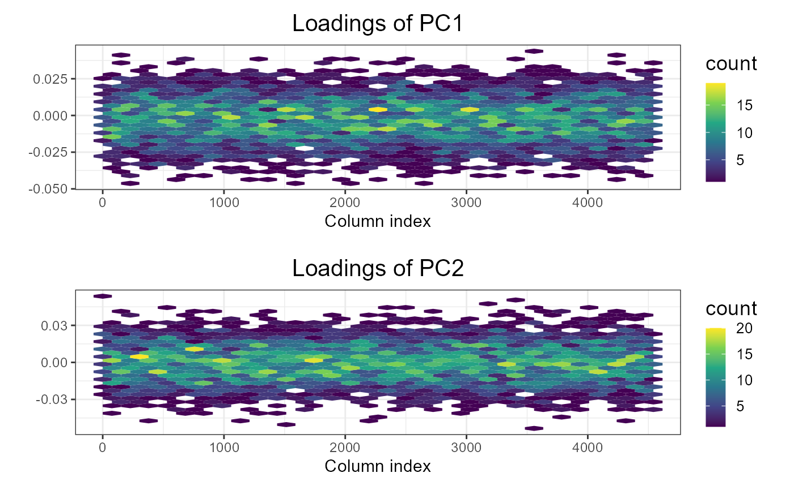

Plot method for class big_SVD.
Arguments
- x
An object of class
big_SVD.- type
Either
"screeplot": plot of decreasing singular values (the default).
"scores": plot of the scores associated with 2 Principal Components.
"loadings": plot of loadings associated with 1 Principal Component.
- nval
Number of singular values to plot. Default plots all computed.
- scores
Vector of indices of the two PCs to plot. Default plots the first two PCs. If providing more than two, it produces many plots.
- loadings
Indices of PC loadings to plot. Default plots the first vector of loadings.
- ncol
If multiple vector of loadings are to be plotted, this defines the number of columns of the resulting multiplot.
- coeff
Relative size of text. Default is
1.- viridis
Deprecated argument.
- cols
Deprecated. Use
ncolinstead.- ...
Not used.
Value
A ggplot2 object. You can plot it using the print method.
You can modify it as you wish by adding layers. You might want to read
this chapter
to get more familiar with the package ggplot2.
See also
big_SVD, big_randomSVD and asPlotlyText.
Examples
set.seed(1)
X <- big_attachExtdata()
svd <- big_SVD(X, big_scale(), k = 10)
# screeplots
plot(svd) # 3 PCs seems "significant"
 plot(svd, coeff = 1.5) # larger font for papers
plot(svd, coeff = 1.5) # larger font for papers
 # scores plot
plot(svd, type = "scores") # first 2 PCs
# scores plot
plot(svd, type = "scores") # first 2 PCs
 plot(svd, type = "scores", scores = c(1, 3))
plot(svd, type = "scores", scores = c(1, 3))
 plot(svd, type = "scores", scores = 1:4, ncol = 2, coeff = 0.7)
plot(svd, type = "scores", scores = 1:4, ncol = 2, coeff = 0.7)
 ## add color (recall that this return a `ggplot2` object)
class(obj <- plot(svd, type = "scores"))
#> [1] "gg" "ggplot"
pop <- rep(c("POP1", "POP2", "POP3"), c(143, 167, 207))
library(ggplot2)
print(obj2 <- obj + aes(color = pop) + labs(color = "Population"))
## add color (recall that this return a `ggplot2` object)
class(obj <- plot(svd, type = "scores"))
#> [1] "gg" "ggplot"
pop <- rep(c("POP1", "POP2", "POP3"), c(143, 167, 207))
library(ggplot2)
print(obj2 <- obj + aes(color = pop) + labs(color = "Population"))
 ## change the place of the legend
print(obj3 <- obj2 + theme(legend.position = c(0.82, 0.17)))
## change the place of the legend
print(obj3 <- obj2 + theme(legend.position = c(0.82, 0.17)))
 ## change the title and the labels of the axes
obj3 + ggtitle("Yet another title") + xlab("with an other 'x' label")
## change the title and the labels of the axes
obj3 + ggtitle("Yet another title") + xlab("with an other 'x' label")
 # loadings
plot(svd, type = "loadings", loadings = 2)
# loadings
plot(svd, type = "loadings", loadings = 2)
 ## all loadings
plot(svd, type = "loadings", loadings = 1:2, coeff = 0.7, ncol = 1)

# Percentage of variance explained by the PCs
# See https://github.com/privefl/bigstatsr/issues/83
# dynamic plots, require the package **plotly**
if (FALSE) plotly::ggplotly(obj3)
## all loadings
plot(svd, type = "loadings", loadings = 1:2, coeff = 0.7, ncol = 1)

# Percentage of variance explained by the PCs
# See https://github.com/privefl/bigstatsr/issues/83
# dynamic plots, require the package **plotly**
if (FALSE) plotly::ggplotly(obj3)